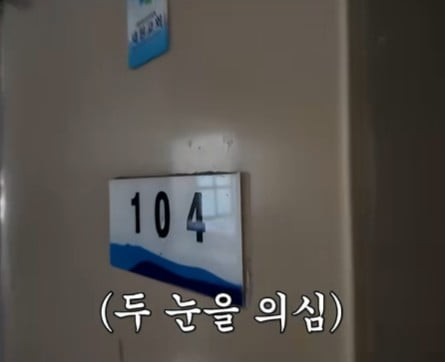
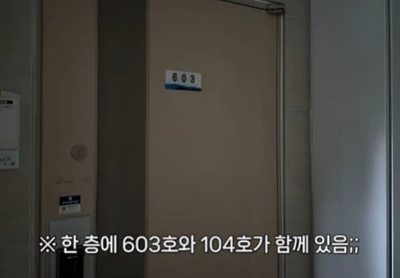
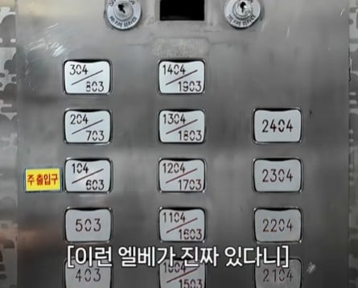
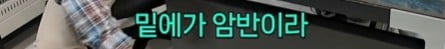
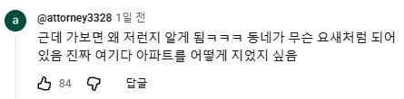

합리적이군
어떻게 생겼길래
https://map.naver.com/p?c=17.00,0,0,2,adh&isMini=true&p=E4QlaE4f8tV269yZay2Bxg,121.46,-1.45,80,Float
존나 신기하게 생김 ㅋㅋ
부산일줄 알았는데 아니구만 ㅋㅋㅋ
입구가 저기 하나인가??
엘리베이터에 주 출입구라고 적혀있는거 보면 3호라인 1층쪽도 뒷문 있긴 할 듯
아 저런형태 울산에서도 함 봤는데
걍 1층부터ㅎ하던데
처음 가는 딸배 'ㅅㅂㅅㅂ' 거리는 게 들린다
꿀알바 생각나네 ㅋㅋ
이러면 그냥 4호라인은 604호부터 시작하면 됐던거 아닌가..
진짜네 ㅋㅋㅋㅋㅋㅋㅋ 앞면은 1층 뒷면은 6층 ㅋㅋㅋㅋㅋㅋㅋㅋㅋㅋㅋㅋㅋ
┌─┐
│ │
-───── └┐│
││
└┘──────
이렇게 생겼네 ㅋㅋ
여기가 한국의 충칭이구만ㅋㅋㅋㅋ
이해가 한번에 되네ㅋㅋ
불광동 미성아파트 6동인가가 딱 저래.
엘베 보구 갔더니 ㅅㅂ 옆집이랑 지정 층 수가 달라부러. 배달 중이라면 진짜 개 욕 나올 상황.
라쿤아파트냐
부산이 아니네
옛날에 강남 어딘가에 이런 호수가 있긴 있었는데
어떤덴 고지대 입구 기준으로 1층두고 저지대 입구는 지하취급하던데
분명 언덕 걸어올라와서 들어왔는데 지하3층이래
창원에 어떤 호텔 지상에 대고 들어가니까 5층이었음ㅋㅋ
저런게 불났을때 호실이랑 층수랑 달라서 혼란옴
나폴리탄 ㅋㅋ
아 홍대도 저런 식이지. 아파트는 좀 어마어마하네
친구 자취방이 들어갈 때는 반지하였는데 방에 가서 창문 열면 언덕에서 내려다보는 뷰였음 ㅎㅎ
저러면 반지하로 봐야겠는데
쿠팡플렉스 할때 저걸 아파트도 아니고 연립주택 그것도 호수 붙여놓지도 않은집에서 당함. 2층 이라고 써있어서 입구에서 계단 올라가서 집하나 있길래 여긴가 하고 놨더니 ㅆㅂ 그집이 입구 두개이고 하나는 고지대 하나는 저지대였는데 지가 2층이라고 써놓은건 저지대기준 2층이라서 나는 고지대쪽 입구로 들어가서 뭣도모르고 계단한층 올라가서 3층에 둔거였음.
좆같은 집에 살면 뭐 시킬때 설명이라도 제대로 해둬라 뒤지기 싫으면 진짜
걍 출입구 위치때문에 저런거같은데 ㅋㅋ
2~3층 정도차이였으면 대충 b1~2층 이렇게
묶을수있을꺼같은데 저건 너무 심하긴하네 ㅋㅋㅋ
좌표로 말해라
치킨 시킬 땐 1층이고 집값 따질 땐 6층인 집